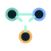

The main entry point for Python, builder workflows, runtime state, session leases, recovery drafts, and server-side script execution.
Open computer referenceBlock overview
The building pieces behind the XL Logic system.
The mod works because its systems stay visible as real block families in the world. This page explains the role of each family, links to a dedicated reference page for each block group, and shows how far each part already goes in the current prototype.
Complete in the current scope
Partially implemented
Filter
Browse block families by responsibility.
Screen
Front-facing rich output with status LEDs, paging, focus mode, automatic multiblock surfaces per target computer, and individually named panels that one computer can address separately.
Open screen reference
Network CableVisible local connection medium for discovery, screens, and device access. Cable topology is part of the actual design language.
Open network cable reference
XLAPI Block
Segment boundary and controlled bridge for remote devices, status requests, ping, device listings, runtime snapshots, and mailbox messages.
Open XLAPI reference
Redstone I/O
Reads signals per side and writes them back in output mode. It ties directly into bus channels and builder actions.
Open redstone I/O reference
Redstone Bus Cable
Transports all 16 bus channels and exposes producers, consumers, and blocking points in its debug output.
Open bus cable reference
Coloured Redstone Cable
Passes exactly one channel onward and makes separated branches in the bus network easier to reason about.
Open coloured cable reference
Light Sensor
Provides light levels through both comparator output and the device API. A strong starting point for reactive builder or Python logic.
Open light sensor reference
Clock
Exposes day time, game time, and real time for displays, time windows, and periodic automation.
Open clock reference
Rain Sensor
Reports rain state and rain strength. It is the basis for Rain Watch, Heavy Rain Alert, and weather-aware logic.
Open rain sensor referenceProxy for adjacent inventories and tanks. Python can inspect contents and move items or fluids between local sides or directly into another named Material I/O endpoint.
Open Material I/O reference
Crafting I/O
Recipe frontend with larger grids, CPU linking, routes, plan queues, resume behavior, reservation mode, and structured job snapshots.
Open Crafting I/O reference
Crafting CPU
Crafts against adjacent inventories, exposes previews, and provides the runtime base for larger planned production chains.
Open Crafting CPU referenceHow they fit together
The relationship between the block families.
- Computer plus Network Cable form the local control segment.
- Screens show the last synchronized runtime output of that same computer and can also be split into individually named target panels.
- Sensors and Redstone I/O provide the reactive input layer.
- Material I/O and crafting components form the productive output side, including direct source-to-sink routes.
- XLAPI extends the whole system beyond one segment when the bridge layer grows further.